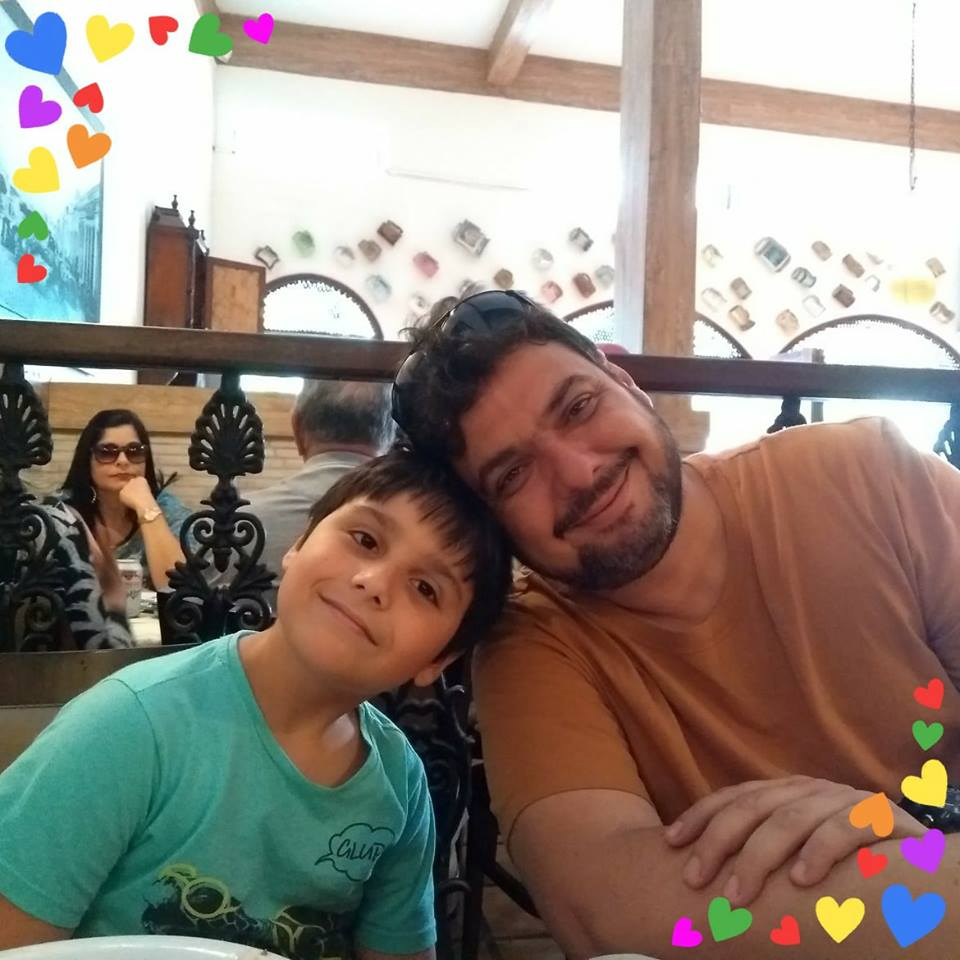

<!-- Left side column. contains the logo and sidebar -->
<aside class="main-sidebar" *ngIf="authService.userSignedIn()">
  <!-- sidebar: style can be found in sidebar.less -->
  <section class="sidebar">
    <!-- Sidebar user panel -->
    <!-- <div class="user-panel">
      <div class="pull-left image">
        
      </div>
      <div class="pull-left info">
        <p>Subtítulo</p>
        <a href="#"><i class="fa fa-circle text-success"></i> Online</a>
      </div>
    </div> -->

    <!-- search form -->
    <!--<form action="#" method="get" class="sidebar-form">-->
      <!--<div class="input-group">-->
        <!--<input type="text" name="q" class="form-control" placeholder="Buscar...">-->
        <!--<span class="input-group-btn">-->
            <!--<button type="submit" name="search" id="search-btn" class="btn btn-flat"><i class="fa fa-search"></i>-->
            <!--</button>-->
          <!--</span>-->
      <!--</div>-->
    <!--</form>-->
    <!-- /.search form -->

    <!-- sidebar menu: : style can be found in sidebar.less -->
    <ul class="sidebar-menu" data-widget="tree">
      <li>
        <a routerLink="/dashboard" routerLinkActive="active">
          <i class="fa fa-tachometer"></i> <span>Dashboard</span>
        </a>
      </li>

      <li class="treeview" *ngIf="shouldShowAdminParentMenu()">
        <a href="#">
          <i class="fa fa-cogs"></i> <span>Administração</span>
          <span class="pull-right-container">
            <i class="fa fa-angle-left pull-right"></i>
          </span>
        </a>
        <ul class="treeview-menu">
          <li>
            <a
              routerLink="/users"
              [queryParams]="{ 'userType': 'Admin'}"
              routerLinkActive="active"
              class="nav-link"
              *ngIf="shouldShowAdminsSubmenu()"
            >
              <i class="fa fa-circle-o"></i>Administradores
            </a>
          </li>

          <li>
            <a
              routerLink="/users"
              [queryParams]="{ 'userType': 'Employee'}"
              routerLinkActive="active"
              class="nav-link"
              *ngIf="shouldShowEmployeesSubmenu()"
            >
              <i class="fa fa-circle-o"></i>Funcionários
            </a>
          </li>

          <li>
            <a
              routerLink="/users"
              [queryParams]="{ 'userType': 'Customer'}"
              routerLinkActive="active"
              class="nav-link"
              *ngIf="shouldShowCustomersSubmenu()"
            >
              <i class="fa fa-circle-o"></i>Clientes
            </a>
          </li>

          <li>
            <a routerLink="/agendas" routerLinkActive="active" class="nav-link" *ngIf="shouldShowAgendasMenu()">
              <i class="fa fa-circle-o"></i>Agendas
            </a>
          </li>

          <li>
            <a routerLink="/activities" routerLinkActive="active" class="nav-link" *ngIf="shouldShowActivitiesMenu()">
              <i class="fa fa-circle-o"></i>Atividades
            </a>
          </li>

        </ul>
      </li>

      <li *ngIf="authService.isEmployee()">
        <a routerLink="/activities">
          <i class="fa fa-tasks"></i> <span>Minhas atividades</span>
        </a>
      </li>
    </ul>
  </section>
  <!-- /.sidebar -->
</aside>
